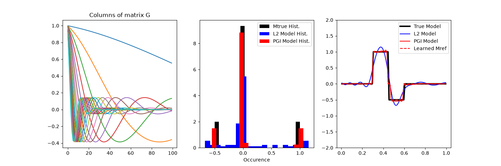

Note
Go to the end to download the full example code.
Petrophysically guided inversion (PGI): Linear example#
We do a comparison between the classic least-squares inversion and our formulation of a petrophysically constrained inversion. We explore it through the UBC linear example.
Tikhonov Inversion##
import discretize as Mesh
import matplotlib.pyplot as plt
import numpy as np
from simpeg import (
data_misfit,
directives,
inverse_problem,
inversion,
maps,
optimization,
regularization,
simulation,
utils,
)
# Random seed for reproductibility
np.random.seed(1)
# Mesh
N = 100
mesh = Mesh.TensorMesh([N])
# Survey design parameters
nk = 20
jk = np.linspace(1.0, 60.0, nk)
p = -0.25
q = 0.25
# Physics
def g(k):
return np.exp(p * jk[k] * mesh.cell_centers_x) * np.cos(
np.pi * q * jk[k] * mesh.cell_centers_x
)
G = np.empty((nk, mesh.nC))
for i in range(nk):
G[i, :] = g(i)
# True model
mtrue = np.zeros(mesh.nC)
mtrue[mesh.cell_centers_x > 0.2] = 1.0
mtrue[mesh.cell_centers_x > 0.35] = 0.0
t = (mesh.cell_centers_x - 0.65) / 0.25
indx = np.abs(t) < 1
mtrue[indx] = -(((1 - t**2.0) ** 2.0)[indx])
mtrue = np.zeros(mesh.nC)
mtrue[mesh.cell_centers_x > 0.3] = 1.0
mtrue[mesh.cell_centers_x > 0.45] = -0.5
mtrue[mesh.cell_centers_x > 0.6] = 0
# simpeg problem and survey
prob = simulation.LinearSimulation(mesh, G=G, model_map=maps.IdentityMap())
std = 0.01
survey = prob.make_synthetic_data(mtrue, relative_error=std, add_noise=True)
# Setup the inverse problem
reg = regularization.WeightedLeastSquares(mesh, alpha_s=1.0, alpha_x=1.0)
dmis = data_misfit.L2DataMisfit(data=survey, simulation=prob)
opt = optimization.ProjectedGNCG(maxIter=10, cg_maxiter=50, cg_rtol=1e-3)
invProb = inverse_problem.BaseInvProblem(dmis, reg, opt)
directiveslist = [
directives.BetaEstimate_ByEig(beta0_ratio=1e-5),
directives.BetaSchedule(coolingFactor=10.0, coolingRate=2),
directives.TargetMisfit(),
]
inv = inversion.BaseInversion(invProb, directiveList=directiveslist)
m0 = np.zeros_like(mtrue)
mnormal = inv.run(m0)
Running inversion with SimPEG v0.25.2.dev29+g5b53e8cb7
================================================= Projected GNCG =================================================
# beta phi_d phi_m f |proj(x-g)-x| LS iter_CG CG |Ax-b|/|b| CG |Ax-b| Comment
-----------------------------------------------------------------------------------------------------------------
0 1.78e+01 2.00e+05 0.00e+00 2.00e+05 0 inf inf
1 1.78e+01 3.25e+02 4.25e+01 1.08e+03 2.44e+06 0 13 7.40e-04 1.81e+03
2 1.78e+01 3.49e+01 4.58e+01 8.48e+02 1.81e+03 0 23 2.93e-04 5.30e-01
3 1.78e+00 9.37e+00 4.87e+01 9.59e+01 4.93e+02 0 50 1.74e+01 8.59e+03 Skip BFGS
------------------------- STOP! -------------------------
1 : |fc-fOld| = 2.0278e+01 <= tolF*(1+|f0|) = 2.0000e+04
0 : |xc-x_last| = 1.8739e-01 <= tolX*(1+|x0|) = 1.0000e-01
0 : |proj(x-g)-x| = 4.9258e+02 <= tolG = 1.0000e-01
0 : |proj(x-g)-x| = 4.9258e+02 <= 1e3*eps = 1.0000e-02
0 : maxIter = 10 <= iter = 3
------------------------- DONE! -------------------------
Petrophysically constrained inversion ##
# fit a Gaussian Mixture Model with n components
# on the true model to simulate the laboratory
# petrophysical measurements
n = 3
clf = utils.WeightedGaussianMixture(
mesh=mesh,
n_components=n,
covariance_type="full",
max_iter=100,
n_init=3,
reg_covar=5e-4,
)
clf.fit(mtrue.reshape(-1, 1))
# Petrophyically constrained regularization
reg = regularization.PGI(
gmmref=clf,
mesh=mesh,
alpha_pgi=1.0,
alpha_x=1.0,
)
# Optimization
opt = optimization.ProjectedGNCG(maxIter=20, cg_maxiter=50, cg_rtol=1e-3)
opt.remember("xc")
# Setup new inverse problem
invProb = inverse_problem.BaseInvProblem(dmis, reg, opt)
# directives
Alphas = directives.AlphasSmoothEstimate_ByEig(alpha0_ratio=10.0, verbose=True)
beta = directives.BetaEstimate_ByEig(beta0_ratio=1e-8)
betaIt = directives.PGI_BetaAlphaSchedule(
verbose=True,
coolingFactor=2.0,
warmingFactor=1.0,
tolerance=0.1,
update_rate=1,
progress=0.2,
)
targets = directives.MultiTargetMisfits(verbose=True)
petrodir = directives.PGI_UpdateParameters()
addmref = directives.PGI_AddMrefInSmooth(verbose=True)
# Setup Inversion
inv = inversion.BaseInversion(
invProb, directiveList=[Alphas, beta, petrodir, targets, addmref, betaIt]
)
# Initial model same as for WeightedLeastSquares
mcluster = inv.run(m0)
# Final Plot
fig, axes = plt.subplots(1, 3, figsize=(12 * 1.2, 4 * 1.2))
for i in range(prob.G.shape[0]):
axes[0].plot(prob.G[i, :])
axes[0].set_title("Columns of matrix G")
axes[1].hist(mtrue, bins=20, linewidth=3.0, density=True, color="k")
axes[1].set_xlabel("Model value")
axes[1].set_xlabel("Occurence")
axes[1].hist(mnormal, bins=20, density=True, color="b")
axes[1].hist(mcluster, bins=20, density=True, color="r")
axes[1].legend(["Mtrue Hist.", "L2 Model Hist.", "PGI Model Hist."])
axes[2].plot(mesh.cell_centers_x, mtrue, color="black", linewidth=3)
axes[2].plot(mesh.cell_centers_x, mnormal, color="blue")
axes[2].plot(mesh.cell_centers_x, mcluster, "r-")
axes[2].plot(mesh.cell_centers_x, invProb.reg.objfcts[0].reference_model, "r--")
axes[2].legend(("True Model", "L2 Model", "PGI Model", "Learned Mref"))
axes[2].set_ylim([-2, 2])
plt.show()

Running inversion with SimPEG v0.25.2.dev29+g5b53e8cb7
Alpha scales: [np.float64(0.5324068363721874), np.float64(0.0)]
<class 'simpeg.regularization.pgi.PGIsmallness'>
================================================= Projected GNCG =================================================
# beta phi_d phi_m f |proj(x-g)-x| LS iter_CG CG |Ax-b|/|b| CG |Ax-b| Comment
-----------------------------------------------------------------------------------------------------------------
0 3.08e-02 2.00e+05 0.00e+00 2.00e+05 0 inf inf
1 3.08e-02 3.88e+01 3.52e+02 4.96e+01 2.44e+06 0 14 1.68e-04 4.11e+02
geophys. misfits: 38.8 (target 20.0 [False]) | smallness misfit: 2982.4 (target: 100.0 [False])
mref changed in 25 places
Beta cooling evaluation: progress: [38.8]; minimum progress targets: [160000.]
2 3.08e-02 4.69e+00 5.73e+01 6.45e+00 4.11e+02 0 44 7.17e-04 2.95e-01
geophys. misfits: 4.7 (target 20.0 [True]) | smallness misfit: 2395.4 (target: 100.0 [False])
mref changed in 1 places
Beta cooling evaluation: progress: [4.7]; minimum progress targets: [31.]
Warming alpha_pgi to favor clustering: 4.267298137957714
3 3.08e-02 5.03e+00 9.41e+01 7.93e+00 4.64e+00 0 50 8.07e+00 3.74e+01
geophys. misfits: 5.0 (target 20.0 [True]) | smallness misfit: 1103.3 (target: 100.0 [False])
mref changed in 0 places
Add mref to Smoothness. Changes in mref happened in 0.0 % of the cells
Beta cooling evaluation: progress: [5.]; minimum progress targets: [22.]
Warming alpha_pgi to favor clustering: 16.97023255136028
4 3.08e-02 5.68e+00 1.45e+02 1.02e+01 3.95e+01 0 50 6.43e-01 2.54e+01
geophys. misfits: 5.7 (target 20.0 [True]) | smallness misfit: 391.3 (target: 100.0 [False])
mref changed in 0 places
Add mref to Smoothness. Changes in mref happened in 0.0 % of the cells
Beta cooling evaluation: progress: [5.7]; minimum progress targets: [22.]
Warming alpha_pgi to favor clustering: 59.79152295084915
5 3.08e-02 6.69e+00 2.48e+02 1.43e+01 3.57e+01 0 50 2.18e+01 7.79e+02
geophys. misfits: 6.7 (target 20.0 [True]) | smallness misfit: 274.8 (target: 100.0 [False])
mref changed in 0 places
Add mref to Smoothness. Changes in mref happened in 0.0 % of the cells
Beta cooling evaluation: progress: [6.7]; minimum progress targets: [22.]
Warming alpha_pgi to favor clustering: 178.85164845403943
6 3.08e-02 7.56e+00 3.41e+02 1.81e+01 7.83e+02 0 50 1.82e+00 1.42e+03
geophys. misfits: 7.6 (target 20.0 [True]) | smallness misfit: 125.5 (target: 100.0 [False])
mref changed in 0 places
Add mref to Smoothness. Changes in mref happened in 0.0 % of the cells
Beta cooling evaluation: progress: [7.6]; minimum progress targets: [22.]
Warming alpha_pgi to favor clustering: 473.15030478361695
7 3.08e-02 9.89e+00 5.22e+02 2.60e+01 1.43e+03 0 50 8.00e-01 1.14e+03
geophys. misfits: 9.9 (target 20.0 [True]) | smallness misfit: 86.3 (target: 100.0 [True])
All targets have been reached
mref changed in 0 places
Add mref to Smoothness. Changes in mref happened in 0.0 % of the cells
Beta cooling evaluation: progress: [9.9]; minimum progress targets: [22.]
Warming alpha_pgi to favor clustering: 956.8009309218934
------------------------- STOP! -------------------------
1 : |fc-fOld| = 3.4620e+00 <= tolF*(1+|f0|) = 2.0000e+04
1 : |xc-x_last| = 9.2072e-02 <= tolX*(1+|x0|) = 1.0000e-01
0 : |proj(x-g)-x| = 1.4277e+03 <= tolG = 1.0000e-01
0 : |proj(x-g)-x| = 1.4277e+03 <= 1e3*eps = 1.0000e-02
0 : maxIter = 20 <= iter = 7
------------------------- DONE! -------------------------
Total running time of the script: (0 minutes 5.521 seconds)
Estimated memory usage: 329 MB